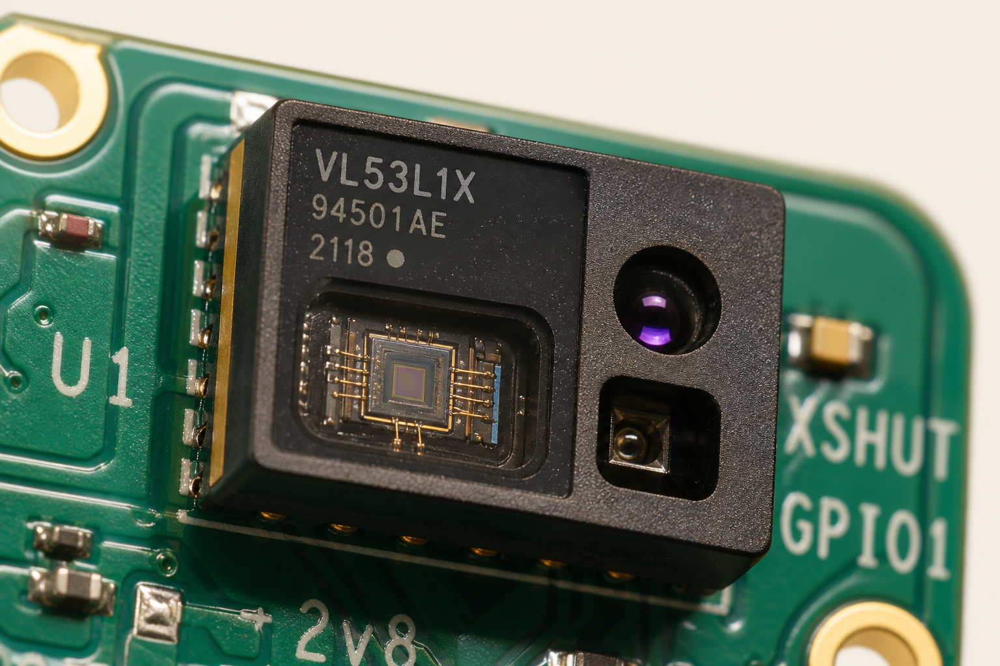
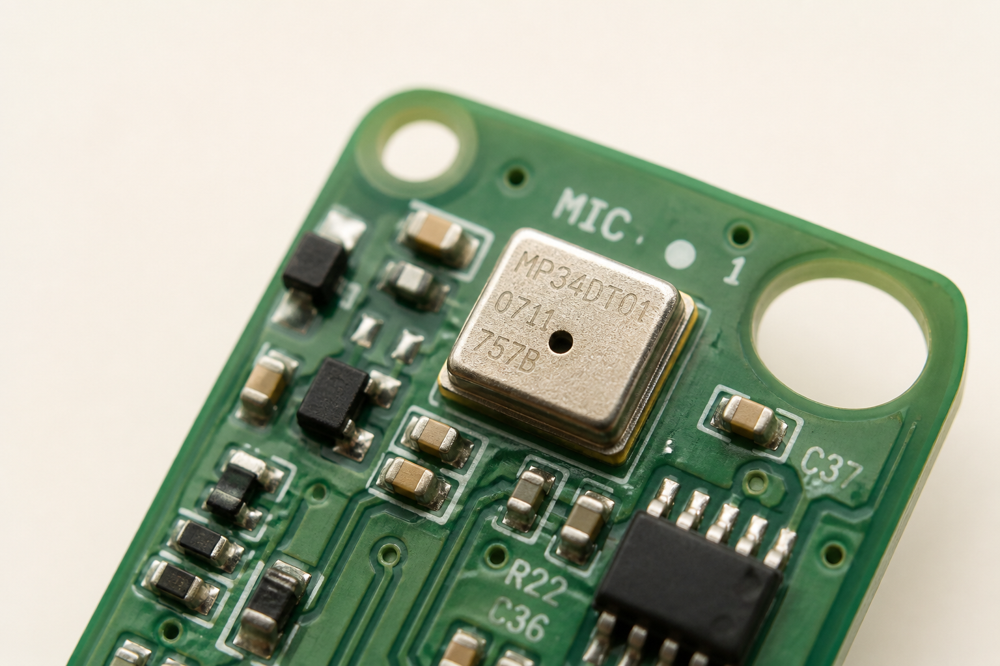
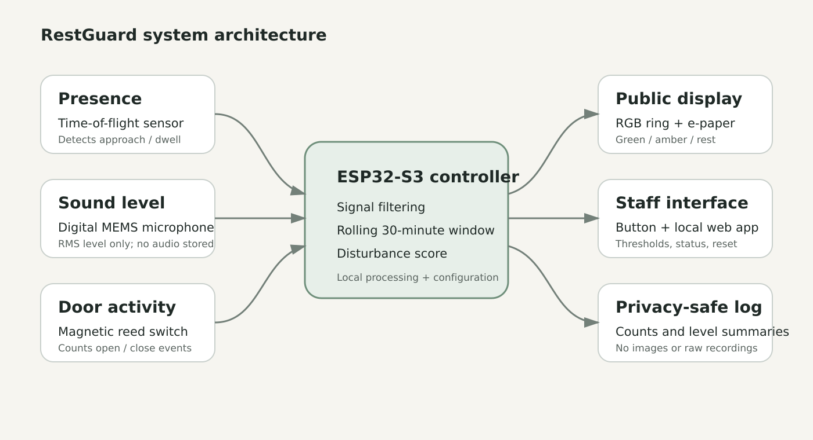
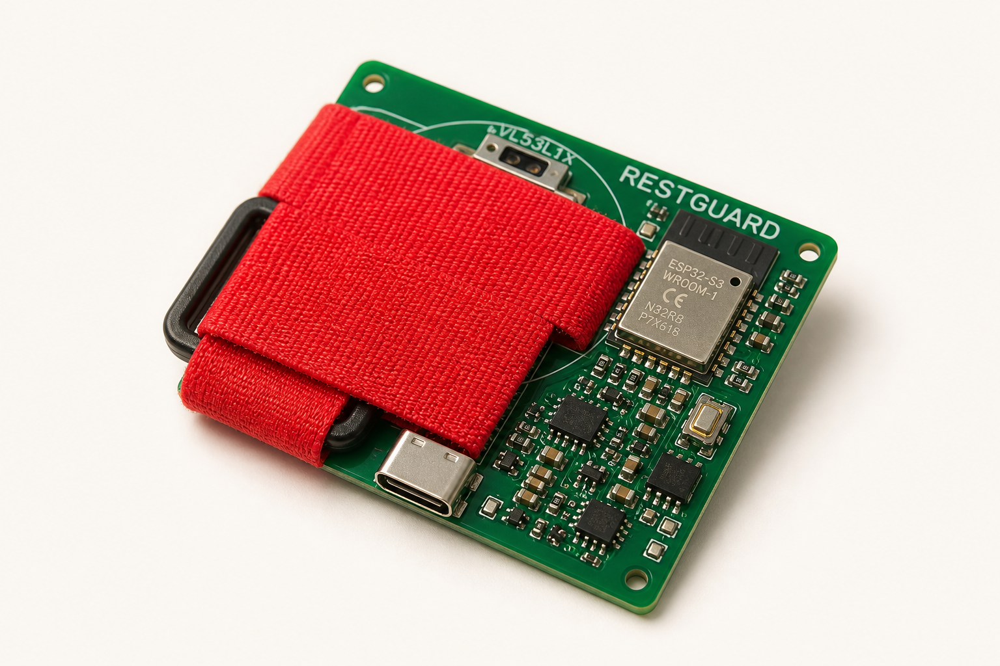

01
Time-of-flight
VL53L1X ranging, limited to the visitor zone (about 0.3–1.5 m). Class 1 emitter. Programmable field of view to reduce glass-glare false counts.

Wearable science / Multi-sensor
RestGuard products integrate a time-of-flight ranger, a digital MEMS microphone and a magnetic door switch on one local controller. The sensors do not “read” an animal. They count environmental events, then mutually constrain a single public state.
Functional integration
Everyday objects already hide MEMS and optical ranging — phones, watches, robots. RestGuard uses that density so a 100 × 70 × 30 mm shell can hold presence, sound level, door state, a clock, a display and a radio — without a camera and without storing speech.
Each sensor is useful. The system is the point: ToF plus dwell describes a qualified approach; RMS level describes minutes of noise; the reed describes handling. The ESP32-S3 keeps a shared 30-minute window so the three stories stay aligned.
VL53L1X ranging, limited to the visitor zone (about 0.3–1.5 m). Class 1 emitter. Programmable field of view to reduce glass-glare false counts.
Digital I²S MEMS microphone used only as an RMS meter. No waveform, no speech recognition, no audio archive.
External reed switch and magnet. Counts open and close. Alignment is a site-calibration problem, not an AI problem.
A rolling window on the ESP32-S3. Wi-Fi for a local staff page. Summaries only — counts and levels, never identities.
Sensor science
A time-of-flight sensor times a Class 1 infrared pulse. RestGuard does not treat every body in the corridor as an event. An approach is qualified only when a person enters the configured zone and stays for a minimum dwell.
Glass, reflections and visitor angle need site calibration. The VL53L1X manufacturer lists a typical 27° field of view and ranging to 400 cm; the product intentionally uses a much smaller visitor window.
Output · mm in zone
Illustrative distances. Target: ≥90% of scripted approaches, <10% pass-by false counts.
The MEMS capsule is compact and needs no analog codec. Firmware keeps only short-window RMS level. If the level stays above a staff-configured threshold, minutes accumulate as A in the score.
This is not a certified sound-level meter. Calibration is against a reference meter in the test plan, within about ±3 dB-equivalent after setup. Privacy is a requirement (R6), not a slogan.

Digital I²S microphone. Acoustic hole only — no stored audio.
Door openings are among the most disturbing events in a public-facing enclosure. A reed and magnet are inexpensive, fast and private. Target capture is ≥99 of 100 cycles on a test fixture.
The limitation is mechanical: magnet alignment must be controlled when the mounting plate is fitted. That is a service procedure, not a neural network.
Output · events
ToF gives presence. The microphone gives minutes of elevated sound. The reed gives handling. Together they approximate a disturbance load — not a mood.
On-device: filter invalid samples, update dwell and sound timers, append qualified events, drop anything older than 30 minutes, calculate D, apply hysteresis, update the ring, the e-paper and the local summary.
Pipeline
Physical events → sensors → filtered samples → 30-minute window → D → hysteresis → ring + e-paper + staff page
D = 2P + 3O + 0.25A
Care applications
The same pairing a running watch uses for cadence is pointed at rest. Names stay honest: quiet viewing, please give space, rest period — never “the animal is happy.”
The default public message is an invitation to observe calmly, not a permission to tap the glass. False green is a listed risk: visitors must never read the ring as “safe to touch.”
Approaches, door events and noisy minutes have added up. The ring warms to amber and the e-paper changes. Return to green only after D falls below 8, so the display does not chatter.
Avoid interaction unless staff directs otherwise. Staff can also start a rest period on purpose, supporting choice and control without claiming the device created those conditions by itself.
A recessed staff button and the local web app can pause, reset after relocation, or change thresholds. After reboot the device recovers to a neutral guidance state (R7), never a stuck alarm.
Architecture

Honesty in the numbers
